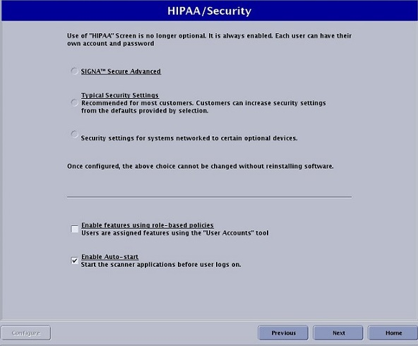

- 00000018WIA300C1130GYZ
- id_152711172.43
- Jul 28, 2025 6:24:04 PM
Security levels for software versions prior to 29.0
To access HIPAA/Security Levels, launch Guided Install from the Service Desktop Manager and select the HIPAA/Security tab.
To access HIPAA/security levels, launch Guided Install from the Service Desktop Manager and select the HIPAA/Security tab.
The HIPAA security screen is mandatory for PX26.0 and later systems. The HIPAA screen is optional for all PX26.0 and earlier systems.
Typical Security Settings is the recommended security level unless the customer has purchased higher security settings.

Definitions:
- Role-based authorization
- It is possible to control access to various system features such as choosing higher level of SAR, setting custom system preferences, and/or protocol management and limit it to a specific group of users.
- SAR management
- Enables the operator to choose second level SAR while scanning.
- Edit preferences
- Enables the operator to change scan preferences.
- Protocol management
- Enables the operator to create, modify, or delete protocols.
- Complex passwords
- A password must have at least 14 characters, at least 1 number, at least 1 uppercase character, at least 1 lowercase character, at least 1 special character, and less than 3 consecutive repeating characters.Note It is possible that the customer changed the default password. If you cannot log on, contact the customer for the correct password.
- User account management
- Customers can add or delete users by selecting User Accounts on the Service Desktop Manager screen.
- Third-party devices
- FUS, CADStream, and others. If a third-party device does not work properly with the MR system at the Security settings for systems networked to certain optional devices security level, follow the normal field escalation process to get this resolved. The third-party vendor may need to fix their device to match the security standards that the GE MR system expects.
| SIGNATM Secure Advanced | Typical security settings (most commonly used security level) | Security settings for systems networked to certain optional devices | |
|---|---|---|---|
| Role-based authorization | Enabled by default | Optional | Optional |
| Complex password | Required (turned on by default) | Optional | Optional |
| SAR management | Required (role based) | Optional (role or password) | Optional (role or password) |
| Edit preferences | Required (role based) | Optional (role or password) | Optional (role or password) |
| Protocol management | Required (role based) | Optional (role or password) | Optional (role or password) |
| User account management | Yes | Yes | Yes |
| SDC shared accounts | Not available | Available | Available |
| Remote service | Not supported | Supported | Supported |
| Third-party devices | Not all supported | Not all supported | Supported |
DoD (U.S. Department of Defense) sites require increased security. For this reason, the SIGNATM security option must be selected. In addition, the IPv6 box must also be installed at these sites. See IPv6 Configuration for additional information on installing these components.